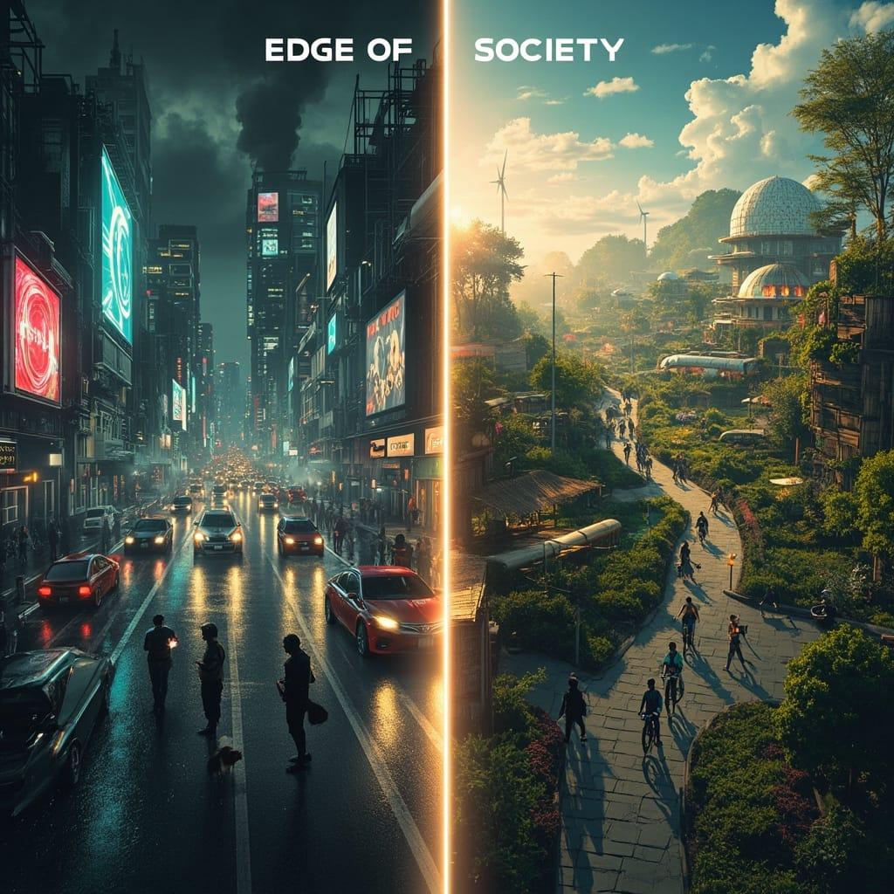

Conversations about building neighborhoods where people and land thrive. We name the challenges and explore how AI tools can help — society has been built a certain way for too long.

Fixed systems, fixed assumptions, fixed ways of living that no longer serve us. The way we organize society — work, housing, governance, money — was designed for a world that no longer exists.
By creating society pilots on the edge of the monolith, we get to experiment and iterate quickly on social structures that are good for: you, the collective, and the planet.
Every episode names the real challenges in community and neighborhood growth — then explores how technology, specifically AI tools, can support, accelerate, or enable what's being built.
The real barriers to building and growing regenerative communities and neighborhoods. What breaks, what stalls, what no one talks about honestly.
How technology — specifically AI tools — can support, accelerate, or enable what communities are building. Tech in service of community, not the other way around.
People running society pilots — founders, builders, enablers